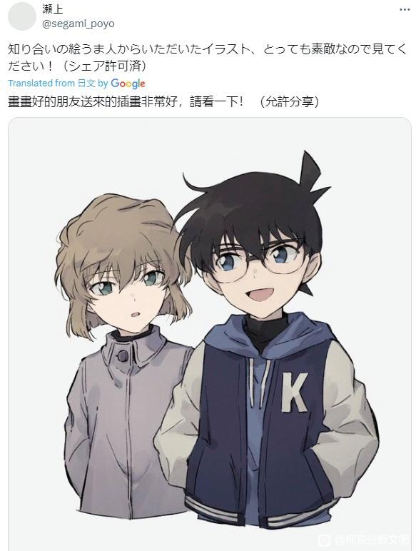
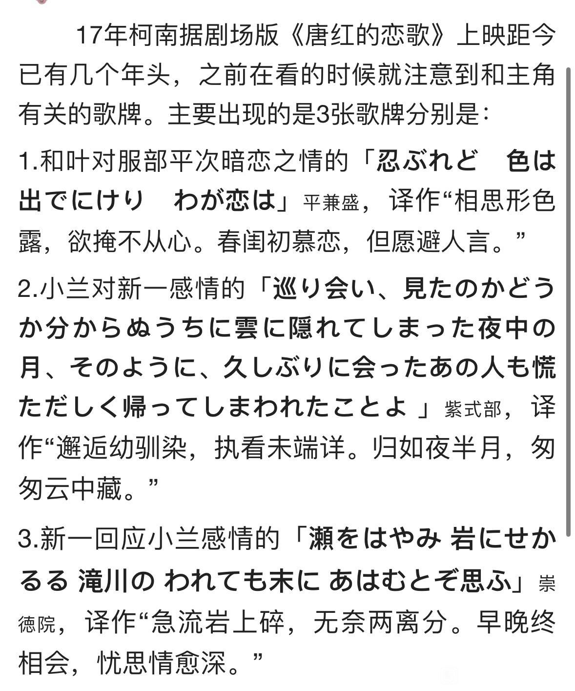
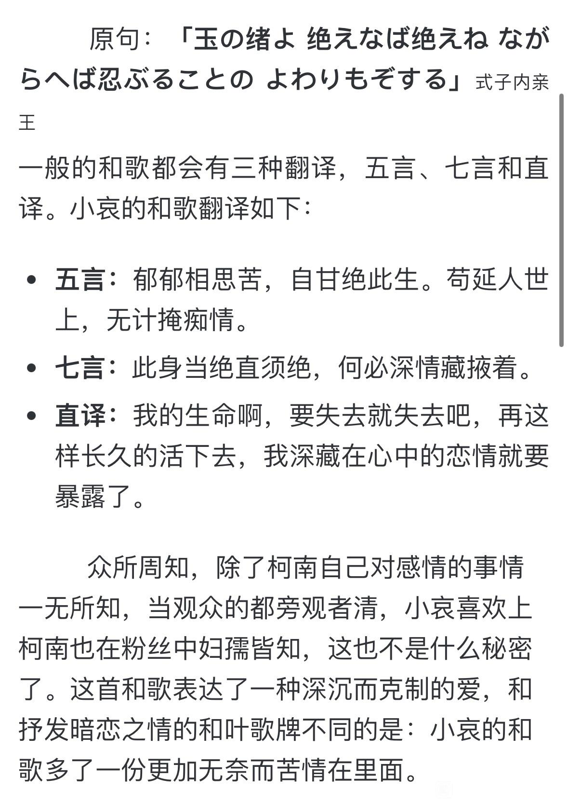
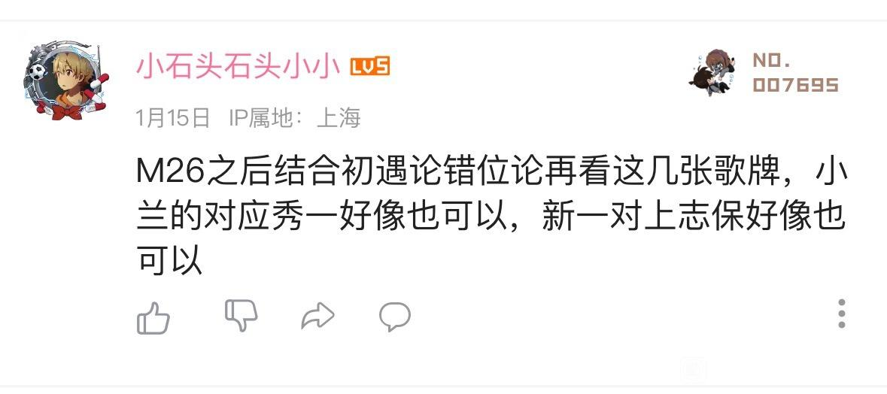

最近在学俳句，突然想再回顾一下唐红里面每个人的歌牌，没想到又有新脑洞，图转自b站，大家理性讨论哈
小情侣镇楼
小情侣镇楼


这个是小哀的

然后我在评论区看到这个大佬的发言，我再往上面一对，可不是能对上，青山难他天

兰的确实能对上秀一，但是新一的是否能对上志保就不一定，必须等73画初遇
这个是很久以前就知道的啦，不过歌牌体系的全貌不止如此。
2024-03-17 09:19 | 贴吧用户_0795E8E:兰还有一个隐藏的，就是 春過ぎて 夏来にけらし ，夏天的兰花
哀的歌牌看字面意思是单恋，但它所关联的历史其实是“秘密的双向暗恋”哦
这里又藏了东西
这里又藏了东西
2024-03-31 22:06 | Angel哀ლ:怎么说2024-04-01 07:39 | 12333333k:回复 Angel哀ლ :搜索九九玉生烟这个ID，这位贴子里可以找到，发链接发不出来


哀的歌牌不能只看意思还要结合历史背景，你会发现一个新的天地
小兰那个应该不会是工藤，感觉对不上，说真的这些放一起明显感觉和叶和小哀的才是一组对应，虽然一个是青涩的爱意难掩一个是悲伤的痴情难言
2024-03-17 13:39 | hadua135:如果这些都是青山特意挑的那我是倾向于初遇论上分的，不然想不到为什么要给工藤选这张两可的牌，又在哀和叶都是爱情牌的情况下给兰安排了张友情牌
兰那个有什么典故吗？为什么说是友情的？
2024-03-18 22:39 | 夏凉秋浅梦:其实不是只写友情，是有朦胧的情感在里面的，但是兰的这首不算恋歌。这首表达的是许久不见的童年玩伴久别重逢又匆匆分别，年少的情感怅然若失无疾而终。总之是be故事线。花牌情缘里也用这句来概括女主最开始喜欢的男主的感情，但结局是女主意识到自己喜欢的事陪在自己身边的男二，然后和男二在一起了